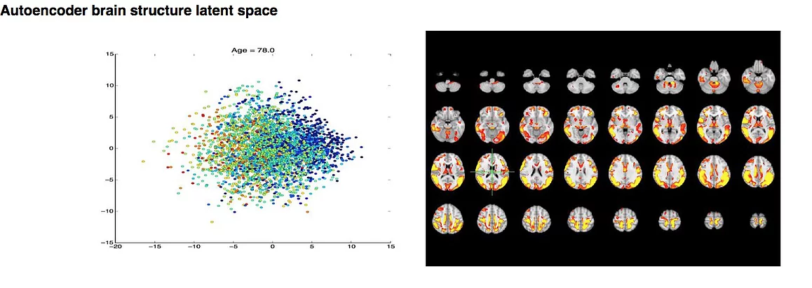
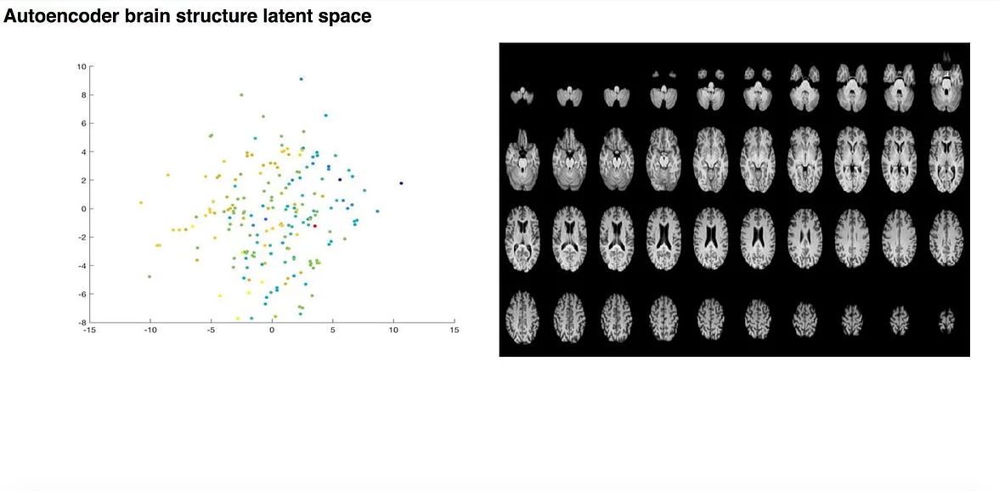
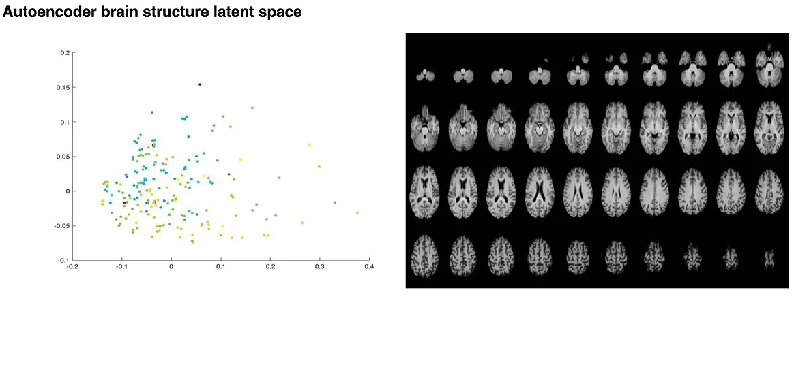

I wrote a python script for Seeley Neuroimaging Lab that allows for the 2-dimensional visualization of a machine learning autoencoder's latent space. I created the script to be easily modifiable for any variety of scatterplots and brain scans.
The created html script allows the user to view different scatterplots that plot a machine learning latent space. As you hover over each point on the scatterplot, the point turns red and an MRI scan of the brain appears, and the age of the patient in question is displayed. When you click on the point, it opens a separate page containing data about the patient in question (I couldn't include images of these pages as it violates patient privacy).
Meant more for function than aesthetics, the visualization tool can display any variety of scatterplots and adjust the images accordingly. Screenshots of the finished products are included below, demonstrated on a small subset of the data.


